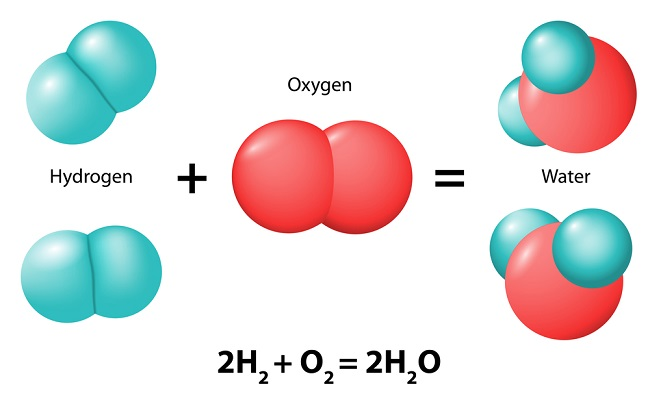

Hierarchies are present everywhere around us. In fact, even we are a product of hierarchies starting from all the way to individual atoms combining to form molecules. Molecules that combine to form protiens, enzymes and many other molecules to cells to tissues to organs to personalities to organisms to societies and the list goes on and on. In this post we will analyze different aspects of hierarchies and their existence and role in the domains we typically do not associate with hierarchies.
Philosophy
Hierarchies improve robustness of a system by distributing the tasks and allowing the system to decompose its multiple goals and act efficiently. Efficiency here refers to multiple aspects - fault tolerance, asynchronous functionality, dedicated expertise and etc. Hierarchies make systems antifragile. Nassim Taleb mentions it on page 70 of the book Antifragile. "A tree has many branches, and these look like small trees; further these large branches have many more smaller branches that sort of look like even smaller trees. This is a manifestation of what is called fractal self-similarity, a vision by the mathematician Benoit Mandelbrot. There is a similar hierarchy in things and we just see the top layer from the outside. The cell has a population of intercellular molecules; in turn the organism has a population of cells, and the species has a population of organisms. A strengthening mechanism for the species comes at the expense of some organisms; in turn the organism strengthens at the expense of some cells, all the way down and all the way up as well."
Modularity
The underlying secret sauce for the existence and emergence of hierarchies is the notion of modularity. Modularity allows producing something by combining two or more things that inhabit a new form. To illustrate the modularity phenomenon let us go back to high school chemistry and recall that a typical chemical reaction looks like as follows:  A molecule combines with another molecule resulting in a new molecule. To generalize the notion of modularity beyond chemical reaction, we may as well replace the word "Molecule" with a "thing". The most common daily life example of modularity is "You have an idea, I have an idea and together we have a new idea". Modularity matters quite a lot since every module can behave somewhat independently and yet the system as a whole exhibits interesting emergent properties as if the system is acting as a single unique entity. Many people have argued that origin of life is tied to chemistry because of the extremely high modularity (due to valence electrons) that allows a huge variety of compounds to form.
Ideas and Creativity
Ideas are abstract entities that exist at a certain layer in the hierarchy of possibilities. What makes ideas so powerful is that they are modular. Essentially, you can combine different ideas like LEGO blocks to obtain new ideas. There isn't anything new in these statements so far, however, assuming ideas exist on a hierarchy of possibilities, we can argue that new ideas open up new possibilities and new possibilities open up room for new ideas. Stuart Kauffman called this causal dependency as adjacent possible.
Now let us consider a framework where we represent ideas as a network (graph) with nodes as ideas and edges define the distance between two ideas in the abstract idea space. The network can be partitioned in a hierarchical fashion where the hierarchical level is formed by arranging ideas that require possibilities achieved by another set of ideas. Under this framework, creativity of an idea can be quantified as the sum of distance between the nodes that form a given idea. There is a lot to unpack in this one line definition. First of all, any creative idea needs to lie on the hierarchy of possibility to a certain degree otherwise adversarially or randomly sampling nodes from a hierachical network would yield extremely high creativity score. In fact, this is why a stereotypical creative individual (especially in arts) is viewed as somewhat maniac because they seem to bring together disparate ideas (set of nodes with high distance) together.
Why should we care
A natural question to ask would be why does it even matter. There are two answers in my opinion. One is more idealistic and the other is opportunistic. The idealist answer is that viewing the world in hierarchies is a better approximation of true reality. Therefore, understanding and interpreting almost anything in a networked and hierachical system improves our understanding and can potentially improve our decision making. Now, the opportunistic me thinks that a lot of technical progress has to be made if we want to perceive the world through the lens of hierarchies. This lens would give us a different data structure to represent several phenomenons around us. However, plenty of philosophy, mathematics and science would be needed to make this possible and hence several exciting opportunities are waiting for our wisdom to arrive. I am developing some mathematical framework in this area so stay tuned and hit me up if it excites you.